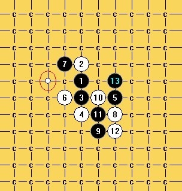
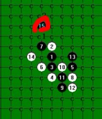

【已解决】看上去应该可以杀掉的14，大家拆拆看。。。
首页
习题专区
#1 【已解决】看上去应该可以杀掉的14，大家拆拆看。。。 作者：空恨社小仙 发表时间：2012-2-10 14:57:48
［ 蹲街丶式寂寞 于 2012-2-22 21:10:08 时花20金币送鲜花一朵］
［ 快乐天羽 于 2012-2-29 0:10:26 时奖励此帖[金币加 100 威望加1］
［此帖子已被 小红眼镜 在 2013-8-14 14:57:02 编辑过］
#2 Re:看上去应该可以杀掉的14，大家拆拆看。。。 作者：自来水 发表时间：2012-2-10 17:56:02
［ 空恨社小仙 于 2012-2-10 19:22:48 时花20金币送鲜花一朵］
#3 Re:看上去应该可以杀掉的14，大家拆拆看。。。 作者：裁决殿雪月 发表时间：2012-2-10 18:00:58
传说中的小仙你好哟 ［ 空恨社小仙 于 2012-2-10 19:23:03 时花20金币送鲜花一朵］
#4 Re:看上去应该可以杀掉的14，大家拆拆看。。。 作者：自来水 发表时间：2012-2-10 18:05:23
....
#5 Re:看上去应该可以杀掉的14，大家拆拆看。。。 作者：越狱行辕 发表时间：2012-2-10 18:15:50
 做地毯都是从最强防开始地毯，我相信，小仙大师一定是地毯了那个12了
做地毯都是从最强防开始地毯，我相信，小仙大师一定是地毯了那个12了
#6 Re:越狱行辕【==Re:看上去应该可以杀掉的14，大家拆拆看。。。==】 作者：空恨社小仙 发表时间：2012-2-10 19:22:28
 让你见笑和失望了，俺做地毯一直是按照从弱到强的顺序做的。。。
让你见笑和失望了，俺做地毯一直是按照从弱到强的顺序做的。。。
#7 Re:看上去应该可以杀掉的14，大家拆拆看。。。 作者：侯军学棋 发表时间：2012-2-11 0:50:08
我用这个15杀的比较复杂
 14败.rar
14败.rar ［ 空恨社小仙 于 2012-2-11 15:16:59 时花20金币送鲜花一朵］
［ 蹲街丶式寂寞 于 2012-2-22 21:09:55 时花20金币送鲜花一朵］
#8 Re:看上去应该可以杀掉的14，大家拆拆看。。。 作者：虚无 发表时间：2012-2-21 23:38:26
这15不行么？
#9 Re:看上去应该可以杀掉的14，大家拆拆看。。。 作者：山城刀客 发表时间：2012-2-22 4:38:59
其实，这个12必败，图谱如下，请查验，有错漏请联系我交流修正！
13手必胜！
松3必败12 C1-C7.rar其他各路变化.rar ［ 逆刃 于 2012-2-22 8:22:34 时花20金币送鲜花一朵］
［ 蹲街丶式寂寞 于 2012-2-22 21:09:34 时花20金币送鲜花一朵］